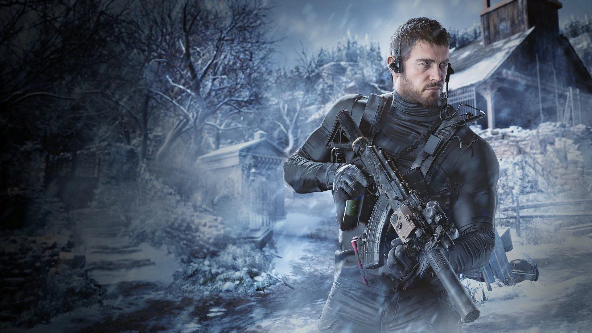

Chris Redfield
Introduction
Chris Redfield is a highly skilled and determined character in the Resident Evil series. He first appeared in Resident Evil (1996) as a member of the elite Special Tactics and Rescue Service (S.T.A.R.S.), tasked with investigating strange incidents in the Arklay Mountains. Chris quickly became known for his bravery, combat expertise, and unwavering commitment to stopping bio-terrorism.
Over the years, Chris has grown into a veteran bio-terrorism operative, taking on dangerous missions around the world. He is recognized for his exceptional strength, tactical intelligence, and resilience in the face of overwhelming threats. Chris often works alongside other key characters, such as Jill Valentine, Leon S. Kennedy, and Claire Redfield, forming strong partnerships in high-stakes operations.
Known for his moral integrity and dedication to protecting civilians, Chris has confronted countless viral outbreaks and rogue organizations. His physical prowess, investigative skills, and leadership abilities have made him one of the most respected and enduring protagonists in the Resident Evil franchise.